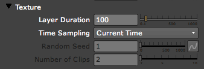
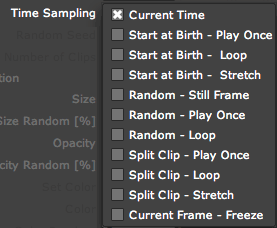

Particle tab> Texture group
The Texture group affects the custom image used for the Sprite and Texture Polygon particles. Texture controls set the particle's behavior, such as specifying which frame of the image to sample from.
To choose the image node, you use Particular's Particle input port. Read how to work with a custom particle on our Custom Particles page.

The Texture group.
Layer Duration
Duration sets how many frames of the image should be recognized.
If you have imported a still image like a JPEG, that Layer Duration would be 1 frame. Technically, you don't have to set Layer Duration for a still image, because Particular will just repeat that single frame forever.
For an image sequence or video, you can tell Particular how many frames that sequence or video is. For a 4 frame animation, set Duration to 4. For a 170 frame animation, set Layer Duration to 170.
Alternately, you can decide how many of those frames you want Particular to pay attention to. Let's say you imported a 170 frame animation, but you only want to use half of the animation. Set Layer Duration to 85 if you want to look at only the first 85 frames.
Time Sampling
Time Sampling determines which frame of the image is sampled to generate the Texture. There are 11 modes. The mode determines which frame the texture is sampled from with options for starting from the first frame, picking a random frame, or splitting the layer source into multiple clips.
The default choice is Current Time. If the custom particle is a still image, the mode should always be set to Current Time. This option will speed up rendering because the same frame of the image is used for all particles in the current frame.
When using an animated particle, the other modes are useful. The Start, Random and Split modes can drastically reduce the time needed to pre-render the custom particle image. Following is an explanation of how each works.

The Start modes all begin at frame one (the 'start') of the custom input image.
Start at Birth - Play Once |
This mode samples the custom image from the first frame once. The particle may die before the custom image ends, or the custom image may end before the particle dies. If the image does not have the same timespan as the particle life, then particles will stop appearing because no source particle is available to Particular. |
Start at Birth - Loop |
This mode samples the custom image from the first frame and restarts (or loops) if the image ends. By looping the content of the image source, a constant stream of particles will appear for image that are shorter than the Particular emission image. |
Start at Birth - Stretch |
This mode samples the custom image from the first frame and time-stretches it so it ends exactly when the particle dies. For example, if the image source has a timespan of 1 sec and the Particle Life [sec] is set to 3.0, then Particular will stretch the image source content by duplicating the input image frames to make its timespan match the 3-second particle life. |
The Random modes pick a frame at random to use.
Random - Still Frame |
This mode selects a single random frame from the source image and uses it throughout the particle's life. |
Random - Play Once |
This mode starts sampling the source image from a random frame, and then plays at normal speed. If the layer does not have the same timespan as the particle life, then particles will stop appearing because no source particle is available to Particular. This mode is similar to the Start at Birth - Play Once mode, but starts from a random point in time for the particle source. |
Random - Loop |
Starts playing the custom image from a random frame, and then plays at normal speed. If the custom image ends, it loops and restarts from the beginning. By looping the content of the image source, a constant stream of particles will appear for images that are shorter than the Particular emission image. The loop will return to the same random start frame for each particle. |
Split Clip modes split the custom image into a number of clips. The number is set with the Number of Clips control. For example, if the custom image is 30 frames and Number of Clips is set to 3, that means the custom image will be split into three 10-frame clips. This is useful for creating a set of animated particles from one image source.
Split Clip - Play Once |
This mode randomly selects one of the clips and plays the clip once. If the image does not have the same timespan as the particle life, then particles will stop appearing because no source particle is available to Particular. |
Split Clip - Loop |
This mode randomly selects one of the clips and plays the clip, looping for the span of the clip. |
Split Clip - Stretch |
This mode randomly selects one of the clips and time-stretches it to fit the particle life. This mode is similar to the Start at Birth - Stretch mode, but it works on the content of the split clips instead of the entire source image. |
Current Frame Freeze |
Holds the referenced particle image at the current time throughout the particle's life. Any particles born at a certain frame will have that same appearance throughout the particle's life, even though the input image may be animating. This happens at each frame. |
Random Seed
This control is active when any of the Random or Split Clip modes are chosen in the Time Sampling menu. Random Seed samples from a random start frame without changing the positions of the particles.
Number of Clips
Active when any of the Split Clip modes are chosen in the Time Sampling pop-up. This control defines the number of clips in the custom image that the Split Clip mode will use.
For example, you may have five movies that are 10 frames each in a pre-comp. You may then select a Split Clip mode and set Number of Clips to 5. This will tell Particular to use just one of the five clips as the texture source for the particle simulation.